The AI CLIs you already use, turned into bots that report back你已經在用的 AI CLI，
變成一組會回報的 bot
ShellBot is a desktop app. Every AI CLI runs in its own tab, and you can read and answer it like a chat. A new AI tab starts as a temporary bot; press “Keep” and it becomes a bot with a name, a face and a memory, while one primary bot takes stock and hands out the work. Away from your computer, you can follow progress and answer their questions from your phone or Telegram.ShellBot 是一個桌面 App：每個 AI CLI 跑在自己的分頁裡，可以改用聊天的方式看和回答。每個 AI 分頁一開就是臨時 bot，按「記住」就變成有名字、有臉、有記憶的 bot，由一個主要 bot 負責盤點和派工。人不在電腦前，也能從手機或 Telegram 看進度、回答它們的問題。
Chat view: work with the AI like a conversation對話畫面：像聊天一樣和 AI 工作
A tab can show a conversation instead of a terminal: the AI's replies line up one by one, tool calls collapse into a single line, and anything that needs your decision becomes buttons you press once. Drop images and files straight into the input box. What you write here or on your phone goes in at once, even while the AI is working.分頁可以改看對話，不用盯著終端機：AI 的回覆一則一則排好，工具呼叫收成一行，要你決定的事變成按鈕，按一下就好。圖片和檔案可以直接拖進輸入框。你在這裡或手機上寫的訊息，AI 正在忙也會直接送進去。
Sign-in expired? It walks you through signing in again登入過期了，一步一步帶你重新登入
When a Claude Code tab's sign-in expires (“Login expired · Please run /login”), the chat view shows a card that takes you through signing in again.Claude Code 分頁的登入過期時（「Login expired · Please run /login」），對話畫面會出現一張卡片帶你重新登入。
Details看細節
Press “Sign in again” and it types /login for you, offers the subscription account (most people) or the API account, opens the sign-in page on the computer you are at, takes the code if the page gives one, presses Continue when the sign-in succeeds, and then offers to send your last message again. Buttons only; no commands to type.按「重新登入」，它替你送出 /login，讓你選訂閱帳號（大多數人）或 API 帳號，在你眼前這台電腦打開登入頁，登入頁如果給一組代碼就貼在卡片上，看到登入成功再替你按「繼續」，最後問你要不要把剛才那則訊息再送一次。全程只要按按鈕，不用打指令。
The app is now called ShellBotApp 改名 ShellBot
Finder, Dock, ⌘-Tab and Spotlight now show ShellBot. Updating from an older version renames it for you; your tabs and settings stay.Finder、Dock、⌘-Tab、Spotlight 現在都顯示 ShellBot。從舊版更新時會自動改名，原本的分頁和設定都留著。
Connect: an app catalog, one click to connect連結：應用程式目錄，按一下就連
Settings → Connect is a catalog of apps: a search box, categories, what needs your attention at the top and a row of recommended ones (Gmail, Google Calendar, Google Drive, Notion).設定 →「連結」變成應用程式目錄：有搜尋框、分類，最上面是需要你處理的，接著是推薦（Gmail、Google 日曆、Google Drive、Notion）。
Details看細節
Google Drive, Google Calendar, Notion and Slack link through the Claude account's connectors (Claude tabs): press Connect, ShellBot opens that service's own page on claude.ai, and when you come back it tests the connection by itself. Gmail is different: the Gmail server on this computer comes first and is the recommended way (it works with any AI; the permission stays on this computer, and reads mail only by default), and the claude.ai connector comes second, for Claude tabs only. Connections that already work on this computer are recognized too, whoever set them up, and the row says which way each one goes (for example “Connected · Claude account connector” or “Connected · local MCP (your own setting)”). “N connected” counts only what works; what needs fixing is counted apart, and expired access asks you to connect again. On a Mac, Reminders and Calendar have a beta route (a local server that asks before every change) that has not been tried on a real Mac yet, so macOS may not ask for access; Messages and Notes are listed as not available yet. A new service is one description file. The AI can read what you connect; ShellBot itself neither reads nor stores any mail.Google Drive、Google 日曆、Notion、Slack 都透過 Claude 帳號的連接器（Claude 分頁可用）：按「連結」，ShellBot 直接打開 claude.ai 上那個服務的頁面，回到 ShellBot 時自動測試。Gmail 不一樣：第一個、也是推薦的是這台電腦上的 Gmail 伺服器（每種 AI 都能用，授權存在這台電腦，預設只讀信），claude.ai 的連接器排第二，只給 Claude 分頁用。這台電腦上本來就能用的連線，不管是不是 ShellBot 設的，也都會認出來，並在那一列寫走哪一條路（例如「已連結 · Claude 帳號連接器」或「已連結 · 本機 MCP（你自己的設定）」）。「已連結 N 個」只算真的通的，要處理的另外算，登入過期會提醒你重新連結。Mac 的提醒事項和行事曆有測試版路線（本機伺服器，每次修改前都會先問），還沒在真的 Mac 上試過，macOS 可能不會跳出授權；訊息和備忘錄標成「還不能連結」。新增一個服務只要一份描述檔。AI 讀得到你連結的內容，ShellBot 本身不讀、不存任何信件。
Gmail, step by step: the step that adds the server to the AI puts it into the CLI the primary bot runs on (Claude Code or Codex; with no primary bot, or one ShellBot does not recognise, Claude Code), and the connection test opens a tab of that same CLI. Disconnecting removes ShellBot's entry from where it was put and from Claude Code. The only hard part is Google's permission: ShellBot opens Google Cloud one step at a time and says which audience to pick. A company Google Workspace address takes Internal and does not expire; External stays in testing, and Google then asks you to sign in again every 7 days. This route was tested with stand-ins and has not yet been tried with a real Google sign-in.Gmail 的步驟：把伺服器加進 AI 的那一步，會加進主 bot 用的 CLI（Claude Code 或 Codex；沒有主 bot 或認不出來就是 Claude Code），連線測試也開一個同樣 CLI 的分頁；斷開連結時，會把加過的地方和 Claude Code 裡 ShellBot 的設定都拿掉。難的只有 Google 授權那段：ShellBot 一步一步幫你打開 Google Cloud，並說明選哪一種對象：公司 Google Workspace 信箱選 Internal，不會過期；選 External 會停在測試中，Google 每 7 天要你重新登入一次。這條路線用測試替身測過，還沒用真的 Google 登入試過。
How it recognizes them: ShellBot asks the AI programs themselves, read-only (claude mcp list for Claude Code, codex mcp list for Codex). Each way of connecting a service is marked checked (it works), found (there, not checked yet), found but not working, or not set up. The service’s card lists every way with its state and which one is in use, and a wizard left half-way no longer hides a way that works. An MCP server you added yourself is used as it is: disconnecting only forgets ShellBot’s record and never removes it. The look runs on its own thread and takes 10–20 seconds (Claude starts each server to check it): the first time the list is read, while the Connect page is open (at most every 5 minutes), and on “Look again”, never on its own every hour. Only names and states are kept, no command line, URL or env value. Right now it only labels: you cannot pick the way on this page, a local script does not count as a way yet, and a connection does not follow a bot to another CLI.認連線的做法：ShellBot 唯讀地問 AI 程式自己（Claude Code 用 claude mcp list，Codex 用 codex mcp list）。每一種連線方式會標成「測過能通」、「找到了還沒測」、「找到但連不上」或「沒有設定」；服務卡片列出每一種方式的狀態和正在用哪一種，做到一半的精靈不會再蓋掉能用的那一種。你自己加的 MCP 伺服器照原樣用，斷開連結只會忘掉 ShellBot 的紀錄，不會刪掉它。這一輪檢查在獨立的執行緒跑，要 10–20 秒（Claude 會逐一啟動伺服器來檢查），時機是第一次讀清單、連結頁開著的時候（最多每 5 分鐘一次），以及按「重新找」；不會每小時自動跑。只留名稱和狀態，不留指令列、網址或 env 值。目前只標出來，不能在這一頁挑走哪一種；本機腳本還不算一種方式，連線也不會跟著 bot 換到別的 CLI。
Use the CLIs you already pay for用你已經付費的 CLI，不用另外買
Claude Code, Codex, Grok Build, OpenCode, Pi, Cursor and Antigravity open right in a tab and use your existing subscriptions and logins. ShellBot itself is free and open source.Claude Code、Codex、Grok Build、OpenCode、Pi、Cursor、Antigravity 直接開在分頁裡，用的是你原本的訂閱和登入。ShellBot 本身免費開源。
Your code and data stay on your computer程式碼和資料留在自己的電腦
Bots run on your own computer, and you can have several. The phone only shows the screen and sends messages; the work still happens on the original machine.bot 跑在你自己的電腦上，可以好幾台。手機只是遠端看畫面、送訊息，工作還是在原本那台機器上做。
Bots with faces: the expression is the state有臉的 bot：表情就是狀態
12 shapes and 14 colours: shape and colour say who it is, the expression says what it is doing. Working bobs, waiting on you shows a “?”, stuck breaks a sweat, done smiles, resting closes its eyes. One glance shows who needs you.12 種形狀、14 種顏色，形狀和顏色是它是誰，表情是它在幹嘛：做事會跳、要你決定頭上有「?」、卡住冒汗、做完會笑、休息閉眼。一眼掃過去就知道誰需要你。
A primary bot dispatches the work主要 bot 負責派工
Hand everyday things to the primary bot first: it takes stock of who is busy, who is stuck and who is waiting on you, then gives the work to the right bot, one owner per task. (Dispatching uses “bot-to-bot messaging (A2A)”; see Install → Your first bot.)日常的事先丟給主要 bot：它先盤點誰在忙、誰卡住、誰在等你，再把工作派給對的 bot，一件事一個負責人。（派工要用到「bot 之間傳話（A2A）」，見「安裝 → 開第一個 bot」。）
“Needs your decision”: one tap from your phone or Telegram「要你決定」：手機或 Telegram 一按就回
When a bot reaches something only you can decide, the question goes to your phone with numbered options; one tap sends the answer back to that bot. A question counts once, so an old button never answers the next one.bot 卡在需要你拍板的地方，問題連同編號選項送到手機；按一下，答案就回到那個 bot。同一題只算一次，舊按鈕不會答到下一題。
Details看細節
To receive a bot's questions on the phone, first turn on “Exact agent status (Claude Code hooks)” in Settings; for now that works with Claude Code only. Permission prompts raised by the CLI itself don't need it.手機收到 bot 的提問，目前要先在設定打開「精準狀態偵測」，而且只支援 Claude Code；CLI 自己跳出的權限確認不需要。
Tasks that outlive a session: a bot keeps its work in one place任務跨對話保存：bot 把手上的事記在同一個地方
A bot keeps what it is doing as tasks (sfctl task add, update, note, done, drop): who owns it, the next step, a due date, what it waits for, and every change as a line of history.bot 把正在做的事記成任務（sfctl task add、update、note、done、drop）：誰負責、下一步、到期日、在等什麼，每次變動都留一行紀錄。
Details看細節
sfctl task mine shows a bot its open tasks and what other bots are waiting on it; --decision puts a question only you can answer on your own list (sfctl task list --decisions); sfctl task stuck lists what nothing has happened to for too long. A hand-off can belong to a task (--for-task N): the task then waits on that bot, the answer is written onto the task, and the task goes back to its owner. A bot that wakes up gets its open tasks in its first message. Everything sits in one database file on your computer, backed up daily (seven kept), with keys and tokens masked before they are written.sfctl task mine 讓 bot 看到自己手上的任務和別的 bot 在等它的事；加上 --decision，只有你能回答的問題會放到你自己的清單（sfctl task list --decisions）；sfctl task stuck 列出太久沒動靜的任務。交辦可以掛在任務底下（--for-task N）：任務就改成等那個 bot，對方的回覆寫回同一件任務，任務再回到負責人手上。叫醒 bot 時，第一則訊息就會帶上它手上還開著的任務。全部存在你這台電腦的一個資料庫檔案裡，每天備份（留七份），金鑰和 token 在寫進去之前就先遮掉。
The office: see who is doing what at a glance (experimental, off by default)辦公室：一眼看出誰在做什麼（實驗性，預設關閉）
Turn it on in Settings → General → Office (experimental, off by default) and a button appears at the foot of the sidebar; it opens an office floor over the whole window (✕ or Esc closes it).設定 → 一般 →「辦公室」打開（實驗性，預設關閉），側欄底部就多一顆按鈕，按下去整個視窗變成一層辦公室（✕ 或 Esc 關閉）。
Details看細節
Bots are the staff, each at their own desk (asleep there when it has no open tab), with the primary bot at the lobby desk. AI tabs that are not bots are interns at a long table. The subagents a Claude Code tab launches are part-timers: they stand beside whoever sent them, tagged with their job, leave when they finish, and you can see when one is stuck. Each paired computer is a room. The Zoning select at the top of the office chooses how staff are grouped: by AI (the default: one walled room per CLI a bot runs on, such as Claude Code, Codex or pi, each in its own colour), custom groups (choose a group on the bot's Details page, or drag its avatar onto a seat in another group), or one room, as before. Interns still sit at the long table in the lobby, and a paired computer keeps its own room. A lit screen, a red “!”, a yellow sign and a coffee cup mean the same as the tab's light: busy, waiting on you, stuck, idle. Click a person to follow them: the panel has two pages, Conversation and Details. Conversation is the chat view in short, with a box underneath to give them an instruction, and a question they ask can be answered with its option buttons right there. A bot with no open tab (asleep, here or on a paired computer) and a part-timer get no box. A paired computer's bot or intern that has a tab gets the same Conversation page and box, and what you write is sent to that computer; if that computer's ShellBot is older than 0.46.1 or out of reach, one line says so. An intern's Details page says what it is doing and has “Ask to leave” (on a paired computer too); a picture pasted into the box is sent along with the words. Drag a bot to swap seats. Today the office's own text is Chinese only, a paired computer's part-timers are not shown, and hand-offs are not drawn as flying paper yet (the key already lists them).bot 是正職，坐在自己的桌子前（沒開分頁就在位子上休息），主要 bot 坐大廳的辦公桌；不是 bot 的 AI 分頁是實習生，坐長桌；Claude Code 分頁派出去的 subagent 是工讀生，站在派他的人旁邊，做完就走，頭上標著他的工作，卡住看得出來。每台配對的電腦是一間房。辦公室上方的「分區」選單決定正職怎麼分：依 AI（預設：bot 跑的每種 CLI 一間有牆的房間，例如 Claude Code、Codex、pi，各有自己的顏色）、自訂分組（在 bot 的「資料」頁選組，或把頭像拖到別組的座位上）、不分區（大家同一間，跟以前一樣）。實習生照舊坐大廳的長桌，配對電腦照舊是自己一間。桌上的螢幕亮、紅色「!」、黃色警示、咖啡杯，跟分頁燈號是同一套意思：在忙、等你決定、卡住、閒置。點一個人可以跟拍，面板分成「對話」和「資料」兩頁：對話頁是對話模式的精簡版，下面有傳話框可以直接下指令，他問的問題也能直接按選項回答；沒開分頁的 bot（這台或配對電腦上休息中的）和工讀生沒有傳話框。配對電腦上有分頁的 bot 和實習生，一樣有對話頁和傳話框，訊息是送到那台電腦；那台的 ShellBot 比 0.46.1 舊或連不到時，會用一行字說明。實習生的「資料」頁會寫他在做什麼，並有「請他離開」（配對電腦上的實習生也有）；貼進傳話框的圖片會跟著文字一起送出。拖曳 bot 可以換位子。目前辦公室裡的字只有中文，配對電腦的工讀生看不到，交辦還不會畫成飛紙（圖例先列著）。
A part-timer counts as working while its log was written in the last 2 minutes and as stuck after 10 silent minutes without finishing; more than 4 at one desk show as 3 and “+N”. A room that fills up (12) grows a second. The way you choose and the groups are kept on this computer, and the groups stay while another way is chosen. Ask to leave: the first press only asks (and says when the intern is still working); a second press within 4 seconds closes its tab, as its ✕ does, and on a paired computer that computer closes it; a bot has no such button. A pasted picture (or a file copied in Finder) is saved the way the chat view saves it, shown above the box with a thumbnail (× takes it off) and sent as its path ahead of the words; for a paired computer's tab it is sent there first, and the panel says so when that computer cannot take a file now. A paired computer's bots and interns show their real state, job, CLI and what they are doing (one line, already redacted over there); a bot's Details page puts what it is doing under its job. With the switch off nothing runs: no button, no timer. Open, the picture refreshes every 3 seconds, and not at all while the window is in the background, from what the page already holds, the task list and the file times and small description files of each open Claude tab's subagents; it never reads a conversation or a screen. Only the Conversation page of the person you follow reads that one tab's conversation, the way the chat view does (a paired computer's person is read on that computer, as the chat view reads a remote tab), every 2 seconds while it is showing and the window is in front. There Enter sends and Shift+Enter starts a new line; a message goes in even while they work, and when a menu is showing or the model is being switched the panel says it is queued and why.工讀生的紀錄檔 2 分鐘內有寫就算在忙，10 分鐘沒寫又還沒做完就算卡住；同一張桌子超過 4 位只畫 3 位，加一個「+N」。房間滿 12 人會長出第二間。選的分區方式和分組都存在這台電腦，換成別的分區方式時分組照樣留著。請他離開：按第一下只是確認（他還在做的話會提醒），4 秒內再按一次才關掉他的分頁，跟按分頁的 ✕ 一樣；配對電腦上的實習生由那台電腦關；bot 沒有這個按鈕。貼進傳話框的圖片（或在 Finder 複製的檔案）用對話模式同樣的方式存下來，在傳話框上方顯示縮圖（按 × 拿掉），送出時路徑放在文字前面；配對電腦的分頁會先把檔案傳過去，那台現在收不到檔案時，面板會說明。配對電腦上的 bot 和實習生顯示真正的狀態、執掌、CLI 和在做什麼（一行，對方已經遮掉敏感內容）；bot 的資料頁把在做什麼寫在執掌下面。開關關著時什麼都不跑，沒有按鈕也沒有計時器；打開時畫面每 3 秒更新一次，視窗在背景就不更新，只看頁面已經有的資料、任務清單，和開著的 Claude 分頁的 subagent 檔案時間與小小的說明檔；不讀對話內容，也不讀畫面。只有你跟拍的那個人的「對話」頁，會像對話模式那樣讀他那一個分頁的對話（配對電腦上的人，就在那台電腦上讀，跟對話模式看遠端分頁一樣），頁面開著、視窗在前景時每 2 秒一次。對話頁：Enter 送出，Shift+Enter 換行；他在忙也會打進去，遇到選單或正在換模型會先排隊，面板會說在排隊、為什麼。
A tab from another computer follows this computer's mode and says it is remote另一台電腦的分頁：跟著這台的模式顯示，標上「遠端」
Open a tab from the sidebar's other-ShellBot section and it follows this computer's mode: in chat style it opens as a conversation read from that computer, otherwise you get its terminal.從側欄「其他 ShellBot」那一區打開別台電腦的分頁，會照這台電腦的模式顯示：對話模式就當對話打開（內容從那台電腦讀來），終端機模式就顯示終端機。
Details看細節
Its name carries “Remote · machine name”, in the chat view and the terminal alike, and the message box names the machine. Your messages, answers to its questions, “send now” and signing in again go to that computer. Both computers need v0.46.1 or later; an older one shows its terminal with a line saying to update it.名稱會帶著「遠端 · 機器名稱」，不管是對話還是終端機，輸入框也寫明是傳給哪一台；你的訊息、回答它的提問、「立刻送出」和重新登入，都送到那台電腦。兩台都要更新到 v0.46.1 以上；舊版那一台會顯示終端機，並提醒你更新。
Computers come first in that section, and paired phones and tablets fold into one row, “📱 Mobile devices” (how many, and how many are on), closed by default and remembered; opened, each is one line: its light, its name and ✕ to unpair. A phone or tablet cannot run an AI CLI, so it has no Message or File buttons; an old pairing with no recorded kind keeps ✎, in case it is a computer, so you can give it an address. A computer behind NAT (no address) stays with the computers. After another computer updates and restarts ShellBot, its tabs fill the pane again; only this computer needs the update.側欄那一區電腦排在前面，配對的手機和平板收成一列「📱 行動裝置」（幾台、幾台在線），預設收起，收合狀態會記住；展開後每台一行：燈號、名稱和斷開配對的 ✕。手機和平板不能跑 AI CLI，所以沒有訊息和檔案的按鈕；沒記下種類的舊配對保留 ✎，萬一它其實是電腦，可以給它位址。在 NAT 後面、沒有位址的電腦仍列在電腦那邊。另一台電腦更新並重啟 ShellBot 後，它的分頁會自動回到撐滿畫面，只要這台更新就好。
A guide that walks you through it導覽：新安裝會帶著走一遍功能
A first launch gets a short tour: a spotlight on each feature on the page (opening a tab, your tabs, usage, pairing a phone or computer, Telegram, settings), with Next, Back and Skip.第一次開 ShellBot 會走一段簡短導覽：頁面上每個功能依序打光（開分頁、你的分頁、用量、配對手機或電腦、Telegram、設定），可以下一步、上一步、略過。
Details看細節
The sidebar's Guide button lists every feature with what it does and where it is; “show me” opens the Settings tab it lives on and points at it, a feature behind a switch that is off is marked so, and what is new since you last looked is counted on the button. During the tour the rest of the screen is dimmed, the place it points at gets a bright ring, and the explanation sits on a light card. A computer that already ran ShellBot gets no popup.側欄的「導覽」按鈕列出每個功能做什麼、在哪裡，「指給我看」會打開它所在的設定分頁並指出位置；需要開關、但開關沒開的功能會標出來；上次看過之後的新功能會在按鈕上顯示數量。導覽時其餘畫面會壓暗，指到的地方有一圈亮框，說明寫在淺色卡片上。已經在用 ShellBot 的電腦不會跳出導覽。
Find a tab: search, and filter by Bot or tab找分頁：搜尋，和 Bot／分頁篩選
The sidebar's search box takes a name, a job or the latest line.側欄的搜尋框用名稱、執掌或最新一句來找。
Details看細節
The chips under it narrow the list: one shows only bots (the ones asleep too), another only the other tabs (temporary ones and terminals); one or the other, and either can be used with the search and the idle chips (idle only, quiet for over 30 minutes, newest reply first). The choice is remembered.下面的泡泡再縮小範圍：「Bot」只看 bot（包括睡著的），「分頁」只看其他分頁（臨時的和終端機），兩者擇一，也可以和搜尋、閒置那幾顆一起用（只看閒置、超過 30 分鐘沒動靜、最近回應排在上面）。選的狀態會記住。
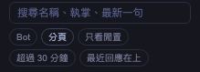
And the rest還有這些
The sidebar's foot is one row側欄底部收成一列
Settings keeps its word; the guide, the AI's manual and About are icons at its right that say their name when you point at them, and the guide's count of new features sits on its icon.「設定」留著字；導覽、給 AI 的說明、關於變成它右邊的小圖示，指上去會顯示名稱，導覽上的新功能數量就掛在它的圖示上。
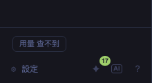
Settings are shorter, with an Advanced tab設定變短了，多了「進階」分頁
Experiments nobody used are gone, and the settings you rarely change (auto /compact, the model badge, the local HTTP API, idle-tab clean-up, the Telegram and LINE wrappers) sit in a new Advanced tab, working as before.沒人用的實驗拿掉了，很少改的設定（自動 /compact、模型標籤、本機 HTTP API、閒置分頁清理、Telegram 和 LINE 的包裝設定）收進新的「進階」分頁，作用跟以前一樣。
Paste screenshots and files貼上截圖和檔案
Paste a screenshot or a Finder file with ⌘V (Ctrl+V on Windows), or drag and drop. A preview bar shows it and it attaches when you press Enter.用 ⌘V（Windows 是 Ctrl+V）貼上截圖或 Finder 的檔案，或直接拖進來。預覽列會顯示，按 Enter 時自動附上。
Tabs that survive a restart重開 App，分頁還在
On macOS and Linux every session runs inside tmux: close ShellBot, reopen it, and the tabs and their scrollback are back. Windows brings back the tab list; Claude Code and Codex reattach to their conversation, scrollback is not kept.macOS／Linux 每個分頁都跑在 tmux 裡：關掉 ShellBot 再打開，分頁和捲動紀錄都還在。Windows 保留分頁清單，Claude Code、Codex 會接回對話，捲動紀錄不會留。
Telegram bridgeTelegram 橋接
One Telegram bot routes across all your sessions: /list, /1 /2 to switch, voice messages with speech-to-text, and file and photo forwarding.一個 Telegram bot 串起所有分頁：/list 列出分頁、/1 /2 切換、語音訊息轉文字、檔案和照片轉傳。
Usage at a glance額度一眼看
Claude Code and Codex show 5-hour and weekly usage, with several accounts each; Grok Build and Antigravity show weekly usage. When a CLI exposes no number, ShellBot says “no data” rather than guess.Claude Code、Codex 顯示 5 小時和每週用量，可多帳號；Grok Build、Antigravity 顯示每週用量。CLI 沒有可讀的數字時，ShellBot 寧可寫「沒有資料」，也不估一個百分比。
Several computers, one list好幾台電腦，一份清單
Pair another ShellBot (Frame Link) or your phone, and the bots on paired computers appear in your list, labelled with the machine they run on.配對另一台 ShellBot（Frame Link）或手機之後，配對電腦上的 bot 也會出現在你的清單裡，標上是哪一台。
English and 繁體中文英文和繁體中文
The app follows your operating system's language and speaks both.App 跟著作業系統的語言走，英文和繁體中文都支援。
More about the chat view對話畫面的更多細節
Open and switch:怎麼開、怎麼切：Settings → Interface style → “Chat”. New installs start in chat view; computers that already ran ShellBot keep the terminal view until you turn it on. Each tab has a Chat / Terminal switch at the top, or press ⌘⇧M (Ctrl+Shift+M on Windows and Linux); switching affects only that tab.設定 → 介面風格 →「對話」。新安裝預設就是對話畫面；原本在用的電腦維持終端機畫面，想用再打開。每個分頁上方有「對話／終端機」切換鈕，或按 ⌘⇧M（Windows、Linux 是 Ctrl+Shift+M），切換只影響那一個分頁。
Supported CLIs:支援的 CLI：Claude Code, Codex, OpenCode, Grok Build, Cursor and Pi. An Antigravity tab shows the terminal. Two Pi tabs in the same folder that are both writing cannot be told apart: Pi does not say which log is whose.Claude Code、Codex、OpenCode、Grok Build、Cursor、Pi；Antigravity 的分頁會顯示終端機。兩個 Pi 分頁開在同一個資料夾、又同時在寫的時候，ShellBot 分不出哪份紀錄是哪個分頁的（Pi 沒說）。
In the conversation:對話裡：Right-click a message to reply. Image paths in a message show as thumbnails; other files reveal themselves in Finder (File Explorer on Windows) when clicked. Type # in the input box to list bots (sleeping ones too) and open tabs, plus the bots on a paired computer (labelled with which machine; A2A must be on at both ends), and pick one to call it. In a terminal tab, typing # picks a bot or a conversation too, and ↑↓ move the picker even while a full-screen CLI such as Claude Code is running. A card waiting for your decision can be dismissed with ✕.對某則訊息按右鍵可以「回覆」；訊息裡的圖片路徑會直接顯示縮圖，其他檔案點一下會在 Finder（Windows 是檔案總管）標出來。在輸入框打 # 會列出 bot（包括睡著的）和開著的分頁，也會列出配對電腦上的 bot（標上是哪一台，兩台都要開 A2A），選了就叫它；在終端機分頁打 # 也能挑 bot 或對話，就算 Claude Code 這類全螢幕 CLI 正在跑，↑↓ 也能移動選單；等你決定的卡片可以按 ✕ 收起來。
Sending, queue and model:送出、排隊與模型：What you write in the chat view or on a phone goes into the tab at once, even while it is working, as typing in the terminal does; so do messages from other bots and computers (A2A, hand-offs, results, sfctl send, another computer). Both still wait in a few cases: while the tab shows a menu (the keys would pick an option), while its model is being switched, and while a Telegram or LINE message is in flight. Yours also wait for a draft in the input box to be cleared; theirs wait while you have unsent words in the input box. A Codex tab's own last answer is no longer mistaken for such a draft, so messages to a Codex tab do not get stuck behind it. A message the AI takes into the turn it is already running no longer stays “sending” in the chat view. A message asking a bot to write its memory still waits for a free tab. A message that has to wait says who it is waiting for and for how long, and can be sent ahead of the queue. Click the model label above a tab to change the model; ShellBot types the command for you, so there is no need to reopen the tab. The model label in the tab bar always shows the tab you are on, not the one you switched from.在對話畫面或手機上寫的訊息，分頁正在跑也會直接送進去，跟在終端機打字一樣；其他 bot 和電腦送來的訊息（A2A、交辦、回報、sfctl send、另一台電腦）也一樣。兩種都有幾種情況會先等：分頁正在顯示選單（按鍵會被當成選了某個選項）、正在換模型、Telegram 或 LINE 的訊息還在處理中；你自己的訊息還會等輸入框的草稿清掉，別人送來的訊息則是等你在輸入框裡還沒送出的字。Codex 分頁自己上一則回覆不會再被當成這種草稿，送給 Codex 的訊息不會因此卡住。AI 把你的訊息併進正在跑的那一輪時，對話模式也不會再一直顯示「送出中」。要 bot 寫記憶的訊息仍然要等分頁空下來。要等的訊息會寫清楚在等誰、等多久，也可以「插隊送出」。分頁上方的模型標籤點一下就能換模型，ShellBot 幫你把指令打進去，不用重開分頁。分頁列上的模型標籤一律顯示你正在看的那個分頁，切換分頁不會再留著上一個分頁的模型。
What it looks like長這樣
All screenshots use demo data. The app is shown in Traditional Chinese; it also runs in English.截圖都是示範資料。
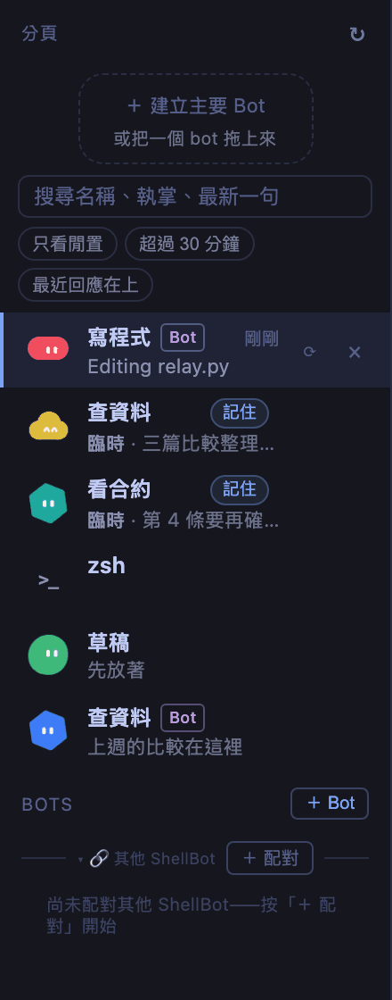
One face per tab, like a chat list. A temporary bot has “Keep” beside it; press it and it becomes your bot. A terminal tab shows >_ instead of a face.每個分頁一張臉，像聊天清單。臨時 bot 旁邊有「記住」，按了就變成你的 bot；終端機分頁用 >_ 代替臉。
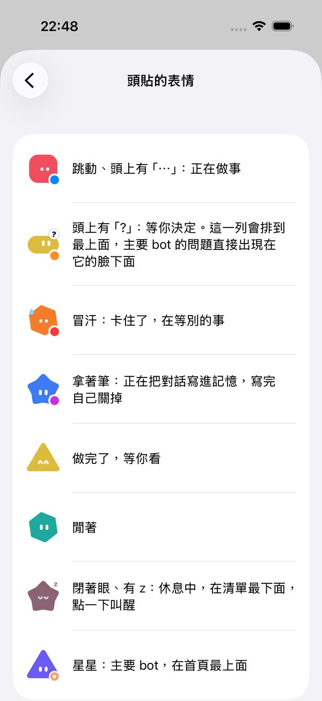
The same faces on the phone. A small dot in the corner shows the state, and the app's settings explain each expression.手機上也是同一套臉：角落的小點標狀態，App 設定裡有說明。
← swipe for more screenshots →← 左右滑動看更多截圖 →
Chat view on the desktop桌面版的對話畫面

Signing in again, step by step登入過期，一步一步重新登入
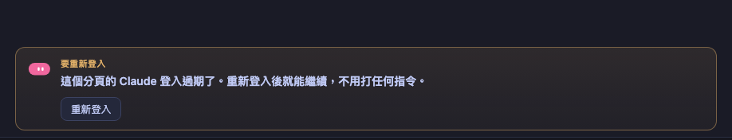
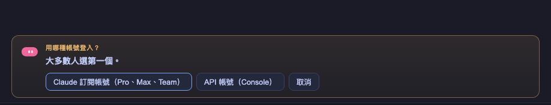
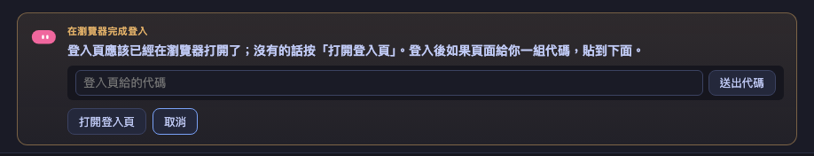
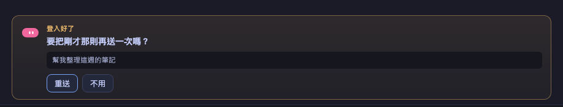
The guide導覽
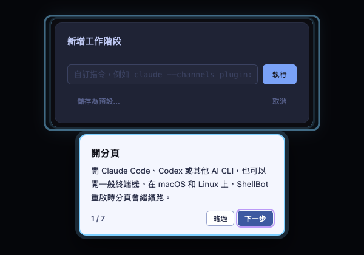
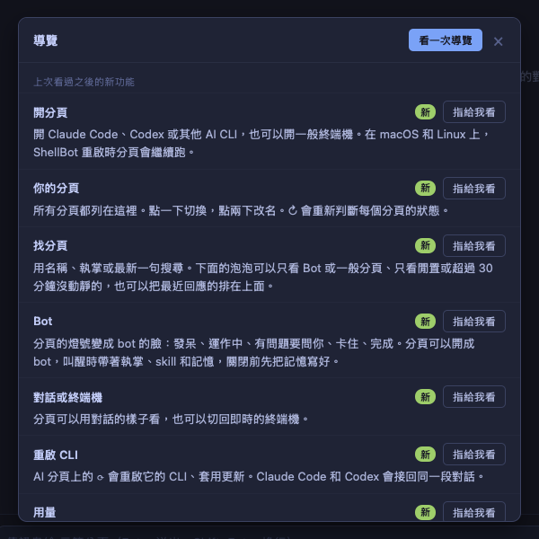
A tab from another computer另一台電腦的分頁
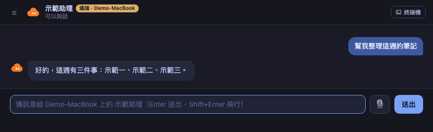
Connect, as an app catalog連結：應用程式目錄
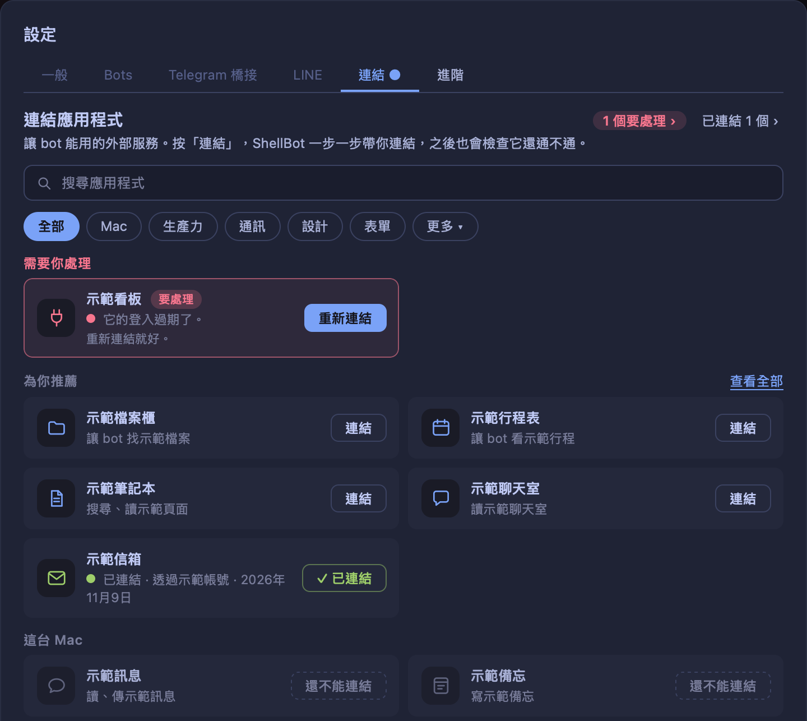
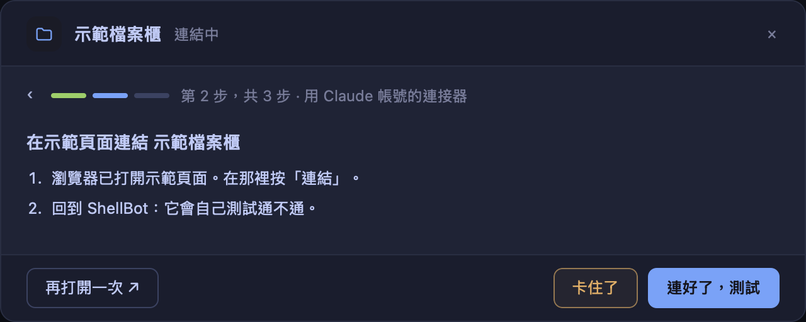
The office (experimental)辦公室（實驗性）
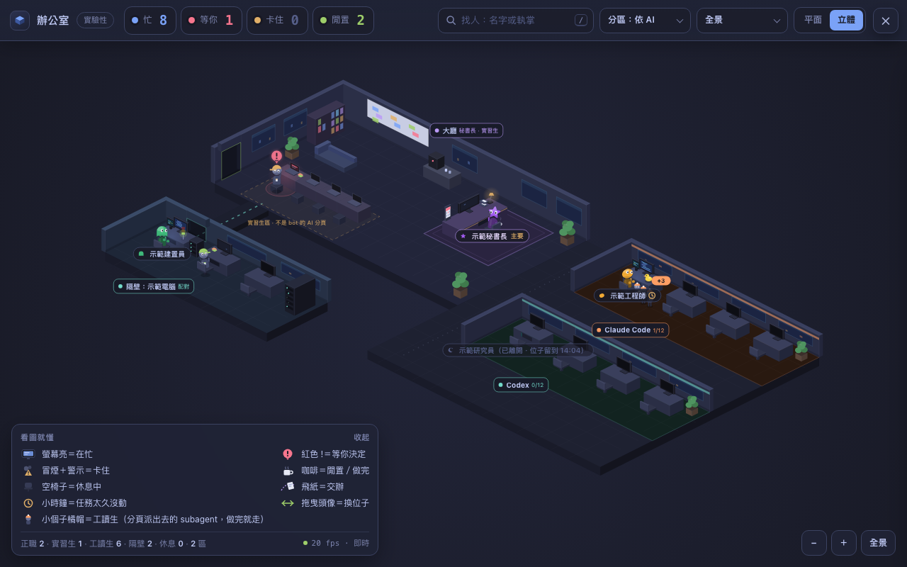
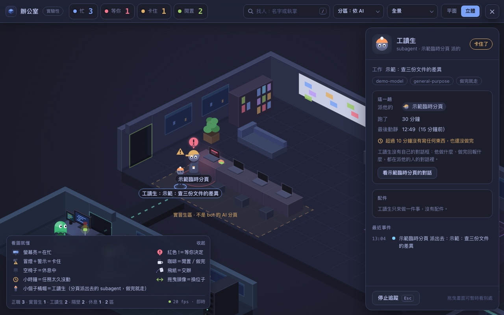
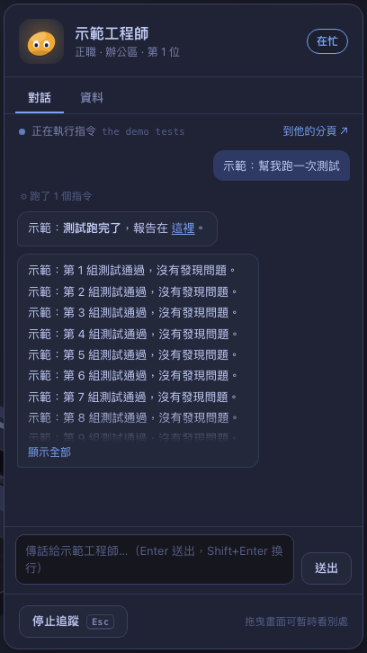
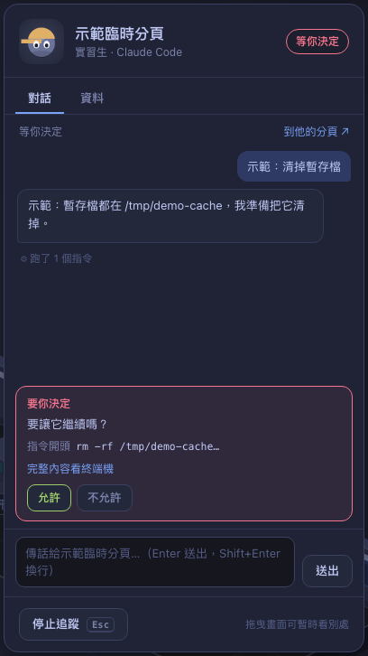
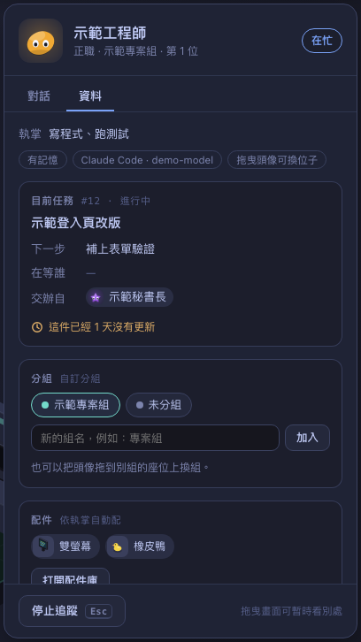
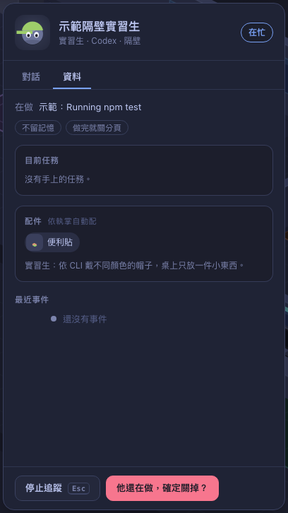
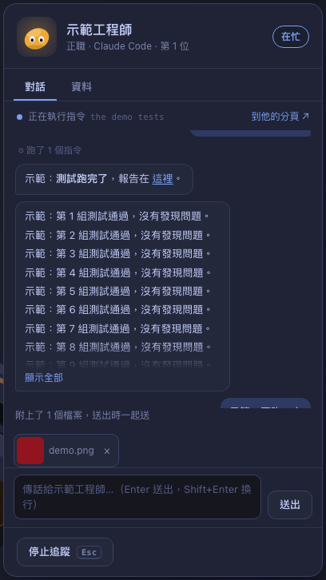
One line to install; run the same line again to update一行指令裝好，重跑同一行就是更新
Open a terminal (PowerShell on Windows) and paste the line below. It installs whatever is missing, downloads ShellBot, sets up the launch commands, and on a first install opens ShellBot when it is done.打開終端機（Windows 用 PowerShell），貼上下面這一行。缺什麼它自己裝，再下載 ShellBot、建好啟動指令，第一次裝完會自動打開 ShellBot。
shellframe and sfctl commands and the settings folder keep the old name, so existing setups and paired machines keep working. The GitHub project and the install URL are now named shellbot.指令和設定資料夾還叫 shellframe，是故意的。ShellBot 是 ShellFrame 的新名字。App 本身（Finder、Launchpad、Spotlight、Dock、⌘-Tab）現在都顯示 ShellBot，Windows 的桌面捷徑也叫 ShellBot；從舊版更新時會自動改名，原本的分頁和設定都留著。shellframe／sfctl 兩個指令、設定資料夾都沿用舊名，所以舊的設定和配對過的機器照常能用。GitHub 專案和安裝網址現在叫 shellbot。What gets installed (macOS)會裝什麼（macOS）
- Only what is missing: Homebrew, Apple's Command Line Tools (git), Python 3.12 (from Homebrew, not Apple's) and tmux (keeps tabs alive after the app closes)缺的才裝：Homebrew、Apple 命令列工具（git）、Python 3.12（用 Homebrew 裝，不用 Apple 內建的）、tmux（讓分頁在 App 關掉後還活著）
- ShellBot itself and its own Python environment, in your user folderShellBot 本體和它自己的 Python 環境，裝在你的使用者資料夾
- The
shellframeandsfctlcommandsshellframe、sfctl兩個指令 - The app in your Applications folder, pinned to the Dock應用程式資料夾裡的 App，並釘到 Dock
No git? That is fine: the installer deals with it, and may open Apple's installer window (see “What may need you” below).沒有 git 也沒關係：安裝器會自己處理，必要時會跳出 Apple 的安裝視窗（見下面「需要你動手的地方」）。
How long it takes要多久
About 1–3 minutes if Homebrew is already there; a brand-new Mac takes about 10–20 minutes, mostly Apple's Command Line Tools download. Not yet timed on a clean machine: this is an estimate.約 1～3 分鐘（已經有 Homebrew）；全新的 Mac 約 10～20 分鐘，大多花在下載 Apple 命令列工具。還沒在全新的電腦上實測，這是估計。
What may need you需要你動手的地方
- Press Enter once and type your login password (the account must be an administrator): that is Homebrew asking.按一次 Enter、輸入開機密碼（帳號要是管理員），這是 Homebrew 在要；
- Apple may open a window: click Install, then Agree.可能會跳出 Apple 的視窗，按「安裝」，再按「同意」。
Before each step, the installer says in plain words what it is about to do.每一步做之前，安裝器都會先用白話說明。
AI CLIs: asked at the very endAI CLI：最後問你要不要裝
At the end it asks whether to also install Claude Code and Codex (the default is no; press y to install; ones already installed are skipped). If you pick Codex and the computer has no Node.js, Node.js is installed too. After that, sign in the first time you open the tab.安裝的最後會問要不要順便裝 Claude Code、Codex（預設是不裝，按 y 才裝；已經裝了的會跳過）。選了 Codex、電腦又沒有 Node.js 時，會一併裝 Node.js。裝完後，第一次開分頁時登入即可。
The others are not installed automatically: the installer ends by listing which of the 7 AI CLIs are already installed and, for the missing ones, the install command for your platform. Which to install and which account to sign in with is up to you.其他幾家不會自動裝：安裝器最後會列出 7 種 AI CLI 哪些已經裝了，缺的附上那個平台的安裝指令。要裝哪家、登入哪個帳號，由你決定。
First things to do after installing裝完第一次要做的事
-
Open ShellBot打開 ShellBot
Search “ShellBot” in Launchpad or Spotlight, or type
shellframein a terminal. It helps to runsfctl permissionsonce first: it grants the privacy permissions and firewall rules up front, so no permission window interrupts you later.在 Launchpad 或 Spotlight 搜尋「ShellBot」，或在終端機輸入shellframe。建議先跑一次sfctl permissions，預先開好隱私權限和防火牆，免得用到一半跳權限視窗。 -
Take the short tour跟著導覽走一遍
A first launch starts a short tour by itself: a spotlight on each feature on the page, with Next, Back and Skip. Skip it and you lose nothing: the Guide button in the sidebar lists every feature with what it does and where it is, and “show me” opens the Settings tab it lives on and points at it. A computer that already ran ShellBot gets no popup after updating; the Guide button just counts what is new.第一次開 ShellBot 會自己開始一段簡短導覽：頁面上每個功能依序打光，可以下一步、上一步、略過。略過也不會少什麼：側欄的「導覽」按鈕列出每個功能做什麼、在哪裡，「指給我看」會打開它所在的設定分頁並指出位置。已經在用 ShellBot 的電腦更新後不會跳出導覽，導覽按鈕只會顯示有幾項新功能。
-
Pick a CLI and open your first tab選一個 CLI，開第一個分頁
With no tabs open, the “new tab” picker appears by itself (if an update notice shows first, it appears after you close that). The menu lists 7 AI CLIs and a plain terminal. In chat view, ＋ opens a new-chat panel: the AIs listed by purpose, and the bots too when Bots is on; the CLI list and typing your own command are tucked under Advanced.沒有分頁時，「開新分頁」會自動跳出來（如果先跳出更新提示，關掉之後才會出現）。選單裡有 7 種 AI CLI 和一般終端機。在對話畫面裡按「＋」會打開「新對話」：依用途列出各個 AI，bot 開著時也列出 bot；CLI 清單和自己輸入指令收在「進階」裡。
-
CLI not installed? Install it and sign in inside the tabCLI 還沒裝？在分頁裡裝、在分頁裡登入
Pick a CLI that is not installed and ShellBot says so; press “install in a new tab” and it runs that vendor's official install command. Then sign in inside the tab the way that CLI does it, for example
grok loginfor Grok Build. ShellBot does not sign in for you: it uses your own login and subscription. Claude Code and Codex can keep several accounts in the AI accounts panel.選了沒裝的 CLI，會跳「尚未安裝」，按「在新分頁安裝」就會跑那家官方的安裝指令。裝好後在分頁裡照那家 CLI 自己的流程登入，例如 Grok Build 用grok login；ShellBot 不代登入，用的就是你這份登入和訂閱。Claude Code 和 Codex 可以在「AI 帳號」面板管理好幾個帳號。 -
Open your first bot開第一個 bot
Bots is on by default on a new install, and the list starts empty: an AI tab you “Keep” is your bot. Computers that already ran ShellBot keep their old setting (if it was off, it stays off); to switch it, go to Settings → Bots.Bots 功能新安裝預設是打開的，名單一開始是空的：你自己「記住」的 AI 分頁，就是你的 bot。以前跑過 ShellBot 的電腦維持原本的設定（原本沒開的還是關著）；要開關，到 設定 → Bots。
To create one: every AI tab starts as a temporary bot (the second line in the sidebar says “temp”); press Keep beside it and it becomes a named bot. Or use “＋ Create a primary bot” or “＋ Bot” in the sidebar and fill in a name and a job. Details under “Bots & tabs”.建立方式：AI 分頁一開就是臨時 bot（側欄第二行寫「臨時」），按旁邊的「記住」就變成有名字的 bot；或用側欄的「＋ 建立主要 Bot」或「＋ Bot」，填名字和執掌。細節見「Bot 與分頁」。
For the primary bot to hand work to other bots, also turn on “bot-to-bot messaging (A2A)”. It is still an experimental feature, off by default, with its switch next to Bots in Settings. With it off, the primary bot's dispatch is blocked.要讓主要 bot 派工給別的 bot，還要打開「bot 之間傳話（A2A）」。這還是實驗功能，預設關，開關在設定裡 Bots 的旁邊。沒打開時，主要 bot 一派工就會被擋。
-
(Optional) Telegram（選擇性）Telegram
Go to Settings → Telegram, paste the bot token Telegram's BotFather gave you and fill in who is allowed to use it; the 📱 on the primary bot's card opens the same thing and can bind by scanning a QR code with your phone. With an empty allow list, anyone who finds the bot can operate your computer, so always fill it in.到 設定 → Telegram，貼上 Telegram BotFather 給你的 bot 代碼、填允許使用的人；主要 bot 卡片上的 📱 也能打開同一件事，可以用手機掃 QR 綁定。允許名單空著時，任何找到這個 bot 的人都能操作電腦，記得一定要填。
-
(Optional) Pair your phone（選擇性）配對手機
To see bots and answer questions on an iPhone or iPad, see the app and the pairing steps below.想在 iPhone／iPad 上看 bot、回答問題，見下面的 App 與配對步驟。
iPhone / iPad appiPhone／iPad App
Developer install only for now目前只能用開發者方式安裝 Not on the App Store尚未上架
ShellBot's iOS / iPad app is not on the App Store; for now a developer installs it directly onto a device.ShellBot 的 iOS／iPad App 還沒上 App Store，目前只能由開發者直接裝到裝置上。
What the app does: the home screen is the bot list, with the primary bot's question coming out from under its face; one tap answers “needs your decision”; you can switch between several paired computers; chat bubbles render bold text, lists and code properly. To see bots on the phone, Bots has to be on at the computer.App 裡能做的事：首頁就是 bot 清單，主要 bot 的問題直接從臉下面冒出來；一按就回答「要你決定」；切換配對過的好幾台電腦；對話泡泡會正常顯示粗體、清單、程式碼。手機上要看到 bot，電腦那邊要先打開 Bots。
Pair your phone (once)手機配對（一次就好）
- Install Tailscale on both the computer and the phone, sign in to the same account and keep it connected. That way the phone can reach the computer from outside (another Wi-Fi, mobile data).電腦和手機都裝 Tailscale，登入同一個帳號，保持連線。這樣手機在外面（不同 Wi-Fi、行動網路）也連得回電腦。
- In ShellBot on the computer, press the pairing button in the sidebar (Frame Link) to make a pairing code; a QR code appears.在電腦的 ShellBot 側欄按「＋ 配對」（Frame Link），產生配對碼，畫面會出現 QR code。
- In the phone app, tap ＋ at the top right, then “Add a computer”, and scan the QR with the camera. Once it scans, you are paired; there is nothing to type.手機 App 右上「＋」→「加一台電腦」，用相機掃 QR。掃到就配對好了，不用打字。
A pairing code works once and is valid for 120 seconds. After pairing, each side keeps its own key, so there is nothing more to enter; the QR carries the address Tailscale gave the computer, so it still connects when you change networks.配對碼只能用一次、120 秒內有效。配對後雙方各自保存一把金鑰，之後不用再輸入任何東西；QR 裡會帶上 Tailscale 給這台電腦的位址，換網路也連得到。
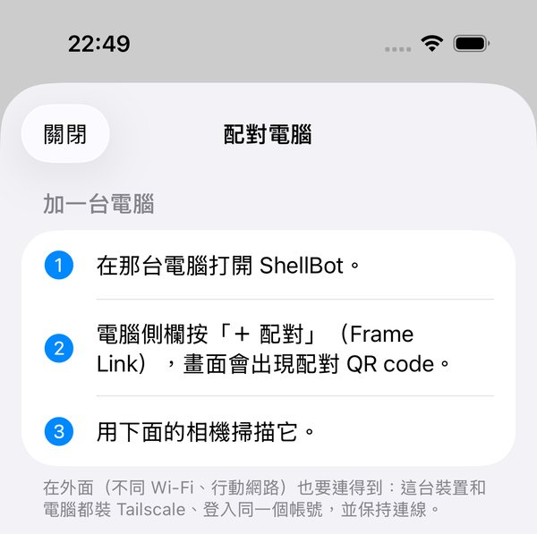
Updating更新
Run the same line again重跑同一行指令
It updates in place to the latest version; any files you changed locally are stashed automatically first.會原地更新到最新版；你本機改過的檔案會先自動暫存起來。
Or update from inside the app或用 App 裡的更新
Check for updates in the app's About; when there is a new version, press “Update now”. The check on startup is off by default and can be turned on in Settings; even then it only notifies you and never applies anything by itself. Away from the computer, send /update_now from Telegram.在 App 的「關於」裡檢查更新，有新版就按「立即更新」。啟動時自動檢查預設是關的，可以在設定裡打開；打開了也只會提示，不會自己套用。人不在電腦前，也可以從 Telegram 送 /update_now。
Known limits by platform各平台的已知限制
Written plainly: what you are likely to meet on day one.照實寫：哪些是第一天就會碰到的。
All platforms所有平台
- Whether Bots is on depends on your computer: Bots is no longer marked experimental, but a computer that already ran ShellBot keeps its old setting. A new install has it on; if it was off, you turn it on in Settings.Bots 要不要打開，看你的電腦：Bots 在設定裡已經不再標「實驗」，但以前跑過 ShellBot 的電腦會維持原本的設定。新安裝預設打開；原本關著的要到設定打開。
- Chat view supports Claude Code, Codex, OpenCode, Grok Build, Cursor and Pi; an Antigravity tab shows the terminal and says why (its conversations are not saved in a readable format).對話畫面支援 Claude Code、Codex、OpenCode、Grok Build、Cursor、Pi；Antigravity 的分頁顯示終端機，並說明原因（它的對話沒有存成讀得懂的格式）。
- Waking a bot waits until the tab is “ready”, and that check has so far been written only for Claude Code and Codex; waking bots on other CLIs has not been verified and may hand over the briefing too early or not at all.bot 叫醒時判斷「分頁準備好了沒」只為 Claude Code 和 Codex 寫過；其他 CLI 的 bot 叫醒還沒驗證過，可能等不到就沒把簡報交進去。
macOS
- Without Homebrew, the installer installs it inside the terminal, which needs you to press Enter and type your login password, and the account must be an administrator; if it is not, or there is no terminal to type into, the installer explains why and stops instead of forcing it.沒有 Homebrew 時，安裝器會在終端機裡裝，要你按 Enter、輸入開機密碼，帳號要是管理員；不是管理員，或沒有終端機可以輸入密碼時，它會說明原因後停下，不會硬裝。
- The first time you use hotkeys, the microphone or the Downloads folder, macOS asks for permission;
sfctl permissionsgrants them all at once.第一次用熱鍵、麥克風、下載資料夾時會跳系統權限視窗；跑sfctl permissions可以一次給完。 - When you send from chat view and the terminal's input box still holds unsent text, a card asks: “send after clearing” or “don't send yet”. The draft is read from Claude Code's input box.對話畫面送出訊息時，如果終端機的輸入框留著沒送出的字，會跳一張卡：「清掉後送出」或「先不送」。草稿是從 Claude Code 的輸入框讀的。
- After the rename,
open -a ShellFrameno longer finds the app (it is called ShellBot now).App 改名後，open -a ShellFrame找不到 App 了（它現在叫 ShellBot）。
Windows
- The in-app “install CLI” button: Claude Code, Antigravity, Grok Build and Cursor run their own PowerShell install commands; Codex and Pi need Node.js first (the one-line installer only installs it when you pick Codex); OpenCode has no official Windows command, so it only links to instructions.App 內「安裝 CLI」按鈕：Claude Code、Antigravity、Grok Build、Cursor 跑各家的 PowerShell 安裝指令；Codex、Pi 要先有 Node.js（一行安裝器只在你選了 Codex 時才裝）；OpenCode 沒有官方的 Windows 指令，只給說明連結。
- After installing a CLI, a ShellBot that is already running cannot see the new PATH: reopen it from the desktop shortcut (the in-app restart does not help).裝完 CLI 之後，正在跑的 ShellBot 拿不到新的 PATH，要從桌面捷徑重開（App 內的重啟也不行）。
- No tmux: reopening the app rebuilds the tabs from settings, and the scrollback and any half-finished turn are lost; Claude Code and Codex reattach to their conversation.沒有 tmux：重開 App 會照設定重建分頁，捲動紀錄和進行到一半的回合會不見；Claude Code、Codex 會接回原本的對話。
- The status lights for Antigravity and OpenCode read the screen only; OpenCode has no chat view on the phone.Antigravity、OpenCode 的狀態燈只看畫面；OpenCode 在手機上看不到對話畫面。
- The first launch asks once to “allow network access” in the firewall.第一次啟動會跳一次防火牆「允許網路存取」。
- It cannot read the draft in the terminal's input box, so the “send after clearing” card does not appear: if the input box already holds text, a message sent from chat view is still sent after that text.讀不到終端機輸入框裡的草稿，所以不會跳「清掉後送出」那張卡：如果輸入框原本就有字，在對話畫面送出的訊息會照舊接在那些字後面送出。
Linux
- Installed from scratch up to a running ShellBot on clean Ubuntu 24.04, Ubuntu 22.04, Debian 12 and Fedora; nobody has yet confirmed how it looks on a real Linux desktop. Arch (pacman) has not been tried.已在 Ubuntu 24.04、22.04、Debian 12、Fedora 的乾淨環境從零裝到 ShellBot 打開；真正的 Linux 桌面上看起來的樣子，還沒有人實際確認過。Arch（pacman）還沒實測。
- Adding system packages needs sudo. If the account has no sudo rights, the installer stops and lists the commands to ask an administrator to run; run them, then paste the install line again.補裝系統套件要 sudo。帳號沒有 sudo 權限時，安裝器會停下來，列出要請管理員執行的指令，執行完再貼一次安裝指令。
iPhone / iPad
- Developer install only; it is not on the App Store.只能開發者安裝，沒有 App Store 版。
- The first pairing is done from the computer with the pairing button; when the two are not on the same network, both need Tailscale.第一次配對要在電腦上按「＋ 配對」；不在同一個網路時，兩邊都要裝 Tailscale。
- The bot screens on the phone need Bots to be on at the computer.手機上的 bot 畫面，要電腦先打開 Bots。
Troubleshooting: macOS / Linux疑難排解：macOS／Linux
Permission windows keep appearing: run sfctl permissions once to grant the privacy permissions and firewall rules up front.權限視窗一直卡住：跑一次 sfctl permissions，預先授予隱私權限與防火牆。
A “install the command line developer tools” window appears (macOS): click Install, then Agree, and wait for it to finish; the installer carries on by itself.跳出「安裝命令列開發者工具」視窗（macOS）：按「安裝」，再按「同意」，等它裝完；安裝器會自己接著往下做。
Stuck at the Homebrew step (macOS): follow the on-screen note, install it by hand from brew.sh, then paste the install line again.停在 Homebrew 那一步（macOS）：照畫面上的說明，先到 brew.sh 手動裝好，再重貼安裝指令。
No sudo rights (Linux): the installer lists the commands to ask an administrator to run; once they are run, paste the install line again.沒有 sudo 權限（Linux）：安裝器會列出要請管理員執行的指令，跑完再貼一次安裝指令。
“curl not found” after pasting (Linux): use the wget line shown under the command box instead.貼了指令說找不到 curl（Linux）：改用上面指令框下方的 wget 那一行。
The app is blocked by Gatekeeper: in System Settings → Privacy & Security press “Open Anyway” once, or run the install line again.App 被 Gatekeeper 擋：到「系統設定 → 隱私權與安全性」按一次「仍要打開」，或重跑安裝指令。
Seven CLIs built in; any other CLI opens too七種 CLI 內建，其他 CLI 也開得起來
ShellBot is not tied to any one vendor: any terminal command can open as a tab. The seven below are built in: ShellBot understands their status, and for most of them it can read the usage as well.ShellBot 不綁任何一家：任何終端機指令都能開成分頁。下面七種是內建的，ShellBot 讀得懂它們的狀態，大部分也讀得到額度。
| CLI | Opens as a tab能開成分頁 | Status light狀態燈 | Usage display額度顯示 | Pick a model指定模型 | Chat on the phone手機上看得到對話 | Chat view on desktop電腦對話畫面 | Can become a bot能變成 bot | Windows |
|---|---|---|---|---|---|---|---|---|
| Claude Code | ✓Built into the ＋ menu「＋」選單內建 | ✓Reads the conversation log and the screen讀對話紀錄＋畫面 | ✓5-hour and weekly, several accounts5 小時＋每週，可多帳號 | ✓Pick a model from a list in the bot's settings, e.g. sonnetbot 設定從清單選模型，例如 sonnet | ✓Chat view and terminal view對話畫面＋終端機畫面 | ✓ | ✓The full set全套 | ✓Tried on a real Windows machine: restart, status light and phone chat有實機紀錄：重啟、狀態燈、手機對話都在 Windows 實測過 |
| Codex | ✓Built into the ＋ menu「＋」選單內建 | ✓Reads the conversation log and the screen讀對話紀錄＋畫面 | ✓5-hour and weekly, several accounts5 小時＋每週，可多帳號 | ✓ | ✓Chat view and terminal view對話畫面＋終端機畫面 | ✓ | ✓ | ✓Supported on Windows; installing needs Node.js first有 Windows 支援；安裝要先有 Node.js |
| Grok BuildxAI's coding CLIxAI 的程式 CLI | ✓Built into the ＋ menu「＋」選單內建 | ✓Reads its event log and the screen讀它的事件紀錄＋畫面 | △Weekly only, no 5-hour window只有每週，沒有 5 小時 | ✓Note: this also changes Grok Build's own default model注意：會一起改掉 Grok Build 自己的預設模型 | ✓Chat view and terminal view對話畫面＋終端機畫面 | ✓ | △Waking not verified yet叫醒還沒驗證 | ？Not tried; a PowerShell install command exists未測；有 PowerShell 安裝指令 |
| OpenCode | ✓Built into the ＋ menu「＋」選單內建 | ✓Reads its session database and the screen讀它的 session 資料庫＋畫面 | ✗Depends on the model provider you connect看你接的模型供應商 | ✓ | ✓Chat view and terminal view對話畫面＋終端機畫面 | ✓ | △Waking not verified yet叫醒還沒驗證 | ？Not tried; the status light reads the screen only and there is no chat view on the phone; no official Windows install command未測；狀態燈只看畫面、手機沒有對話畫面；沒有官方 Windows 安裝指令 |
| Pi | ✓Built into the ＋ menu「＋」選單內建 | △Reads the screen only只看畫面 | ✗Depends on the model provider you connect看你接的模型供應商 | ✓Pick a model in the bot's settings, from the list pi defines on that computerbot 設定從那台電腦上 pi 定義的清單選模型 | △Terminal view only只有終端機畫面 | ✓ | △Waking not verified yet叫醒還沒驗證 | ？Not tried; installing needs Node.js 22.19 or newer未測；安裝要 Node.js 22.19 以上 |
| CursorCursor Agent CLI | ✓Built into the ＋ menu; defaults to a model included in your subscription「＋」選單內建；預設用訂閱內的模型 | ✓The screen and the conversation log畫面＋對話紀錄 | ✗Cannot be read locally; ShellBot only marks whether a model counts as subscription or paid本機讀不到；只標出模型算訂閱還是付費 | ✓Pick a model from a list in the bot's settingsbot 設定從清單選模型 | ✓Chat view and terminal view對話畫面＋終端機畫面 | ✓ | △Waking not verified yet叫醒還沒驗證 | △A Windows install command and tests exist; no real-machine record有 Windows 安裝指令和測試，沒有實機紀錄 |
| Antigravity | ✓Built into the ＋ menu「＋」選單內建 | ✓Reads its conversation database and the screen讀它的對話資料庫＋畫面 | ✓Weekly, split by model family每週，依模型族群分開 | ✗Pick the model inside the CLI; the model field in bot settings is disabled在 CLI 自己裡面選模型，bot 設定的模型欄是關的 | △Terminal view only只有終端機畫面 | ✗Shows the terminal and says why: its conversations are not saved in a readable format顯示終端機，並說明原因：它的對話沒有存成讀得懂的格式 | △Waking not verified yet叫醒還沒驗證 | ？Not tried; the status light reads the screen only; a PowerShell install command exists未測；狀態燈只看畫面；有 PowerShell 安裝指令 |
| Any other CLI其他任何 CLIfor example aider, Gemini CLI, or your own tool例如 aider、Gemini CLI，或你自己的工具 | ✓Add an entry in the ＋ menu yourself在「＋」選單自己加一筆 | △Only generic text on the screen: an approximation只看畫面上的通用字樣，是近似值 | ✗ | ✗Put it in the launch command yourself自己寫進啟動指令 | △Terminal view only只有終端機畫面 | ✗Not among the six that are supported不在支援的六家內 | △It gets a face; memory depends on whether it writes files by itself有臉；記憶要看它會不會自己寫檔 | Depends on that CLI itself看那家 CLI 本身 |
As of ShellBot v0.54.1.
· “Chat view on desktop” is the desktop chat screen (Settings → Interface style, or the switch on each tab); the next column, “Chat on the phone”, is the phone app's screen. Read them separately.
· “Chat on the phone” has two layers: every tab can show its terminal on the phone and take typing; “chat view” is the version tidied into chat bubbles, which needs ShellBot to understand that CLI's log format.
· “Can become a bot”: an AI tab starts as a temporary bot and Keep turns it into a named bot; a plain terminal tab is not a bot. A bot writes its memory in its own conversation. A bot can switch CLI or model; see Bots & tabs. Waking waits until the tab is ready before handing over the briefing, and that check has so far been written only for Claude Code and Codex; the others are not verified.
· The Linux install has been tried on several clean systems; daily use (the CLIs, bots) has not; see the platform limits on the Install tab.依 ShellBot v0.54.1 整理。
・「電腦對話畫面」是桌面版的聊天畫面（設定 → 介面風格，或每個分頁的切換鈕）；下一欄「手機上看得到對話」是手機 App 的畫面，兩邊分開看。
・「手機上看得到對話」分兩層：所有分頁都能在手機上看終端機畫面、直接打字；「對話畫面」是整理成聊天泡泡的版本，要 ShellBot 讀得懂那家 CLI 的紀錄格式。
・「能變成 bot」：AI 分頁一開就是臨時 bot，按「記住」變成有名字的 bot；一般終端機分頁不是 bot。記憶由 bot 在自己的對話裡寫。bot 可以換 CLI 或模型，見「Bot 與分頁」。叫醒時要等分頁準備好才交簡報，這段判斷目前只為 Claude Code 和 Codex 寫過，其他家還沒驗證。
・Linux 的安裝已在幾種乾淨系統實測過；日常使用（各家 CLI、bot）還沒實測，見「安裝」頁的平台限制。
Which ones have no usage number, and why哪幾家沒有額度數字，為什麼
OpenCode, PiOpenCode、Pi
They run on whichever model provider you connect, even a model on your own machine. Money and usage are kept on each provider's side, so there is no single number to read.它們跑的是你自己接的模型供應商，甚至是自己機器上的模型。錢和額度記在各個供應商那邊，沒有一個數字可以讀。
Cursor
There is no usage data to read locally. ShellBot would rather say “no data” than estimate a percentage for you.本機沒有可以讀的額度資料。ShellBot 寧可寫「沒有資料」，也不估一個百分比給你。
Grok Build (only half)Grok Build（只有一半）
Its account quota is counted by the week, so ShellBot shows weekly usage and pace; it never had a 5-hour window.它的帳號額度是以週計算，ShellBot 顯示每週用量和配速；它本來就沒有 5 小時的窗口。
Other CLIs其他 CLI
Not connected. To read usage, a reader has to be written for that CLI; see below.沒有對接。要讀額度，得替那家 CLI 寫一個讀取程式，請看下面。
Want to add a CLI?想加一家 CLI？
Just opening a tab: no code只是要開分頁：不用寫程式
Add an entry in the ＋ menu and fill in the launch command. It can become a bot, and its status light judges from the text on the screen.在「＋」選單新增一筆，填上啟動指令就好。它可以開成 bot，狀態燈會看畫面上的字判斷。
To read usage: add a registry entry要讀額度：加一筆登錄
Add one CLI entry and two reader functions in ShellBot's code, and you get the usage display, the “not installed” notice, the install command and the ＋ menu preset. How: adding-a-provider.md on GitHub.在 ShellBot 的程式裡加一筆 CLI 登錄和兩個讀取函式，就會有額度顯示、未安裝提示、安裝指令和「＋」選單預設。做法見 GitHub 上的 adding-a-provider.md。
Status, and a chat view on the phone: more code要讀狀態、要有手機對話畫面：另外寫程式
A status light that judges from the conversation log, a phone view tidied into chat bubbles, picking the model, knowing it is ready when it wakes: each needs separate code for that CLI to read its log and make the call.燈號要從對話紀錄判斷、手機要整理成聊天泡泡、要能指定模型、叫醒時要知道它準備好了，這些都要替那家 CLI 另外寫讀紀錄和判斷的程式。
Tabs, bots, the primary bot: how it works today分頁、bot、主要 bot：現在是這樣運作的
First, six terms. This is how v0.54.1 works: every AI tab starts as a bot, a temporary one; press “Keep” and it becomes a bot with a name, a face and a memory of its own. Bot-to-bot messaging (A2A) is still an experimental feature, off by default, with its switch next to Bots in Settings; the primary bot needs it to dispatch work.先講清楚六個名詞。這是 v0.54.1 的做法：每個 AI 分頁一開就是一個 bot，先是臨時的；你按「記住」，它才變成有名字、有臉、有自己記憶的 bot。bot 之間傳話（A2A）還是實驗功能，預設關，開關在設定裡 Bots 的旁邊，主要 bot 派工會用到它。
Tab分頁
A running CLI, or a plain terminal. Every tab has a face whose expression changes; a terminal tab shows >_ in place of a face and is not a bot, while every AI tab is. Close the app and open it again: on macOS and Linux the tabs and their scrollback are still there; Windows keeps the tab list, Claude Code and Codex reattach to their conversation, and the scrollback is not kept.一個正在跑的 CLI，或一般的終端機。每個分頁都有表情會變的臉；終端機分頁用 >_ 代替臉，它不是 bot，每個 AI 分頁都是 bot。關掉 App 再打開，macOS／Linux 的分頁和捲動紀錄都還在；Windows 保留分頁清單，Claude Code、Codex 會接回對話，捲動紀錄不會留。
Temporary bot臨時 bot
A newly opened AI tab starts as a temporary bot and is named automatically from your first message, whether you typed it in chat view or in the terminal. The second line in the sidebar says “temp”, with a Keep button beside it. If you don't keep it, it forgets when it closes.新開的 AI 分頁先是臨時 bot，用你的第一句話自動取名字，不管那句話是在對話畫面還是終端機打的。側欄第二行寫「臨時」，旁邊有「記住」按鈕。不記住，關掉就忘了。
Bot (kept)Bot（記住的）
A temporary bot after you press Keep: it has a name, a face and its own memory folder, and it can have a job and skills, including skills only it uses (when names clash its own wins, whichever CLI it runs on). While awake it has one tab running, only ever one at a time; after it sleeps, waking it starts a new conversation that comes back with its memory. You can switch its CLI or model, and its name, face and memory stay. If the name is already another bot's, ShellBot refuses and suggests a free one. A bot knows who it is from its first word: where the program takes added standing instructions (Claude Code, pi and the launchers named after them), its name, what it looks after and where its memory is go in there on every start (a relaunch, Telegram's /relaunch, a restore after the computer restarted), so neither a long conversation being compacted nor /new loses them, and asked who it is, it answers with its name and what it looks after first; other programs get them as the first message. A pi tab started again goes on with the conversation it was in, on the model that conversation was switched to, not the launcher's default.按「記住」之後的臨時 bot：有名字、有臉、有自己的記憶資料夾，也可以有執掌和 skill，包括只給它自己用的 skill（同名時自己的優先，不管它跑哪家 CLI）。醒著的時候它有一個分頁在跑，同一時間只有一個；睡著後再叫醒，是一段新的對話，帶著記憶回來。想換 CLI 或模型也可以，名字、臉和記憶都留著。名字跟別的 bot 重複時，ShellBot 會拒絕並建議一個沒人用的。bot 從第一句話起就知道自己是誰：程式有提供額外常駐指示的地方（Claude Code、pi，以及用它們名字命名的啟動器），bot 的名字、負責什麼、記憶放在哪裡，每次啟動（重啟 CLI、Telegram 的 /relaunch、電腦重開後接回）都放在那裡，長對話被壓縮、按 /new 都不會弄丟，問它是誰，它會先回答自己的名字和負責什麼；其他程式則當第一則訊息交給它。pi 分頁重新啟動時，會接著原本的對話，用對話裡切換過的模型，不是啟動器的預設。
Resting bot休息中的 bot
A bot with no tab open sits at the bottom of the list with its eyes closed. Click it, hand it work, or have another bot message it (A2A must be on), and it opens a new tab and wakes up with its last memory.沒有開著分頁的 bot，排在清單最下面、閉著眼。你點一下、有人派工給它、或別的 bot 傳話給它（要打開 A2A），它就開一個新分頁，帶著上次的記憶醒來。
Primary bot主要 bot
The card at the top of the sidebar, with a star on its face. Take everyday things to it first: it takes stock of who is busy, who is stuck and who is waiting on your decision, then hands the work to the right bot. Telegram messages (when you have not picked a tab with /N) go to it by default. Drag another bot onto the card to change who holds the role. While a bot holds the role it is shown only on that card, not again in the list; it comes back to the list when another bot takes over.側欄最上面那張卡片，臉上有星星。日常的事先找它：它先盤點誰在忙、誰卡住、誰在等你決定，再把工作派給對的 bot。Telegram 傳來的訊息（沒先用 /N 選分頁時）預設也交給它。把別的 bot 拖到卡片上就換人當。它當主要 bot 的時候，只顯示在這張卡片上，清單裡不再重複列出；換成別的 bot 當，它才回到清單。
External bot外部 bot
A bot that lives outside ShellBot, for example a cloud-hosted agent. It has no tab on this computer: ShellBot sends messages to it by webhook, and it replies or hands out work by running sfctl on your computer.住在 ShellBot 外面的 bot，例如雲端的 agent。它在這台電腦上沒有分頁：ShellBot 用 webhook 把訊息送過去，它在你的電腦上執行 sfctl 回覆或派工。
From temporary to your bot從臨時到你的 bot
Switching CLI or model換 CLI 或模型
A bot can move to a different CLI or model, for example from Claude to Codex; its name, face, job and memory stay, but this conversation does not move to the new CLI. Change it in the bot's editor: “Save” applies at the next wake, and “Save and switch now” switches immediately (a sleeping bot wakes at once; an awake one first writes its memory and closes, then wakes with the new settings). Switching CLI without choosing a model clears the model, because the previous CLI's model does not apply. Antigravity picks its model inside the CLI, so the model field is disabled. The model is chosen from the list this CLI supports, the first entry being “CLI default”; a model ShellBot does not recognise is not saved. For pi there is no fixed list: the field lists the models pi defines on that computer (its models.json; only the ids and provider names are read, never the keys), and a model is kept only when the provider the command starts on (its own --provider, or the one its launcher passes) has it, so another provider's model, or one the file does not list, is refused when you save (a provider the file does not define takes any id). A pi tab started again on its conversation still uses the model last chosen with /model; the model in bot settings is where a new conversation starts. For Codex the model field lists the models Codex's own menu shows (read from the list Codex keeps on that computer; only each model's id, name, visibility and order), the same in the bot settings, the tab bar's model menu and the phone's list; only when that file cannot be read is ShellBot's older list shown. A model Codex keeps off its menu can still be saved, and the editor warns that the account may refuse it. A bot's settings can be changed at any time, even while it sleeps: ✎ on the card or right-click, “Edit” on the bot's row, or Settings → Bots.一個 bot 可以換到別的 CLI 或模型，例如從 Claude 換成 Codex；名字、臉、工作和記憶都留著，但這次的對話不會搬到新的 CLI。在 bot 的編輯畫面改：按「儲存」是下次叫醒時換，按「儲存並現在就換」就立刻換（睡著的立刻醒來；醒著的先寫好記憶、關掉，再用新設定醒來）。換 CLI 卻沒指定模型時，模型會清掉，因為上一個 CLI 的模型不適用。Antigravity 在 CLI 自己裡面選模型，所以模型欄是關的。模型從這個 CLI 支援的清單裡選，第一個是「CLI 預設」；ShellBot 認不得的模型不會被存下來。Pi 沒有固定清單：欄位列出那台電腦上 pi 自己定義的模型（它的 models.json，只讀 id 和供應商名稱，不讀 key），而且只有指令原本用的供應商（它自己的 --provider，或啟動器帶的那個）底下有的模型才存得進去，選了別家的、或檔案裡沒有的，按儲存時就會擋下（檔案沒定義的供應商，任何 id 都收）。pi 分頁接回對話重開時，仍用那段對話最後一次 /model 切的模型；bot 設定的模型是新對話的起點。Codex 的模型欄列的是 Codex 自己選單上的模型（讀那台電腦上 Codex 自己存的清單，只讀每個模型的 id、名稱、是否列出和順序），bot 設定、分頁列的模型選單和手機上的清單都一樣；讀不到那個檔時才列 ShellBot 原本的清單。Codex 自己不列的模型還是存得進去，編輯器會警告帳號可能不能用。bot 的設定隨時改得到，睡著的也行：卡片上的 ✎ 或右鍵、bot 那一列的「編輯」，或 設定 → Bots。
One name only只有一個名字
A bot has a single name, and it is the same wherever you change it: the tab's rename dialog, the bot's editor, or the phone. After a rename, the roster, the bound tab, groups and the memory folder all take the new name. The old name stays attached to it: messages sent to the old name still arrive, and no other bot can take that old name.bot 只有一個名字，在哪裡改都一樣：分頁的改名對話框、bot 的編輯頁、手機都行。改了之後，名冊、綁定的分頁、群組和記憶資料夾都換成新名字。舊名字還留在它身上：用舊名字傳給它的訊息照樣送得到，別的 bot 也不能拿舊名字去用。
A bot's day一個 bot 的一天
Memory lives in this computer's settings folder, one folder per bot. Text that comes from other bots, webhooks or Telegram is treated as data only and is never recorded as your preference; no passwords go into memory. Bot-to-bot messages are limited to bots in the roster, with caps on hand-off depth and rate, and all of it is logged; as soon as you answer (button presses included) or speak, the depth count starts over.記憶放在這台電腦的設定資料夾，每個 bot 一個資料夾。從別的 bot、webhook、Telegram 來的文字只當資料，不會被記成你的偏好；記憶裡不放密碼。bot 之間傳話只限名冊裡的 bot，有轉手層數和頻率上限，全部留紀錄；你一回答（包括按選項按鈕）或說話，層數就從頭算。
On screen畫面上長這樣
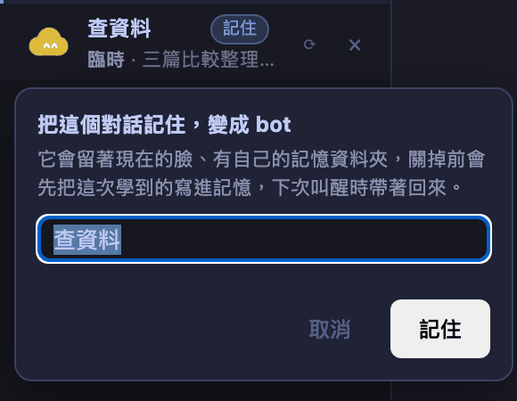
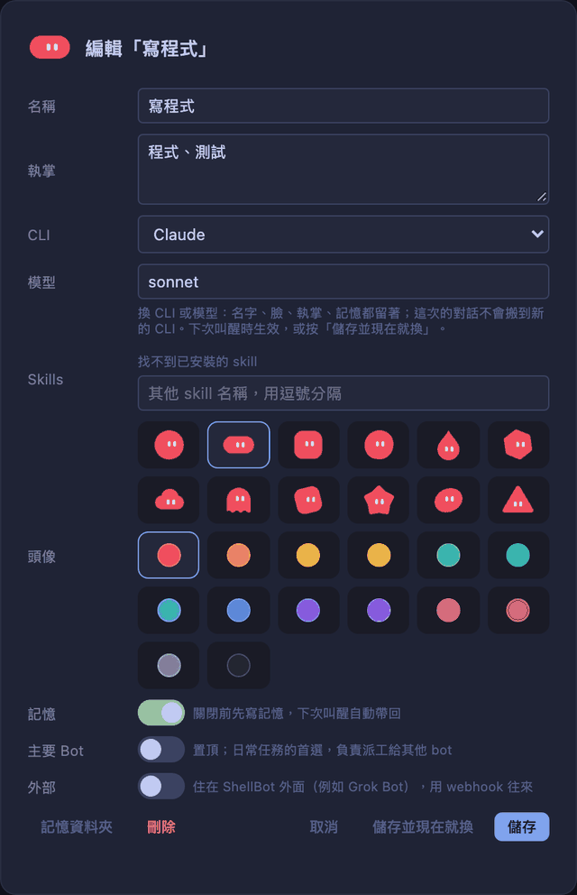
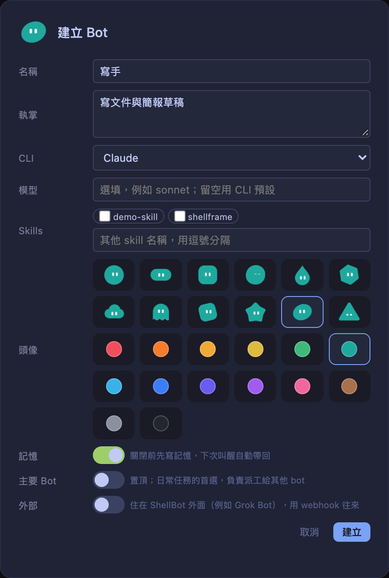
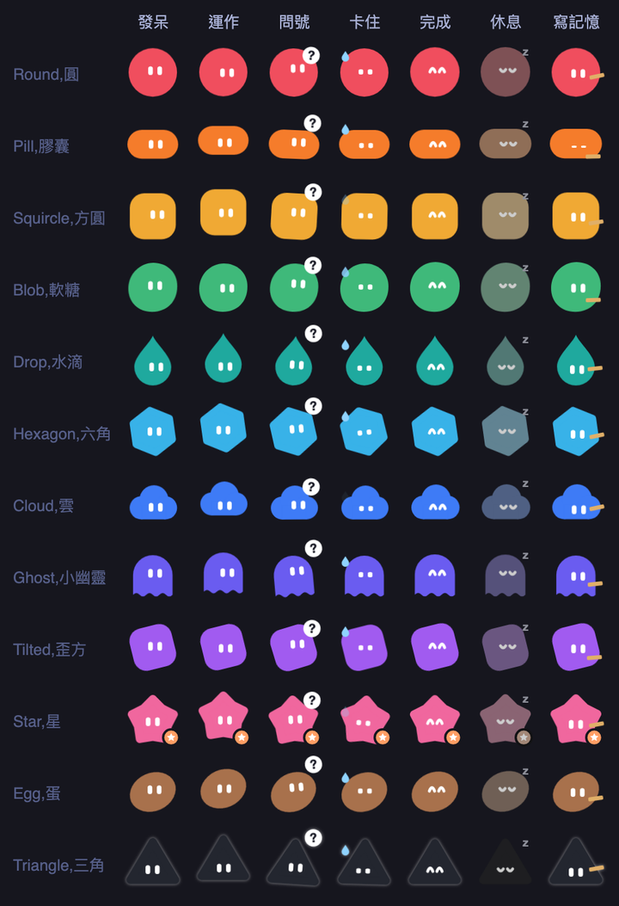